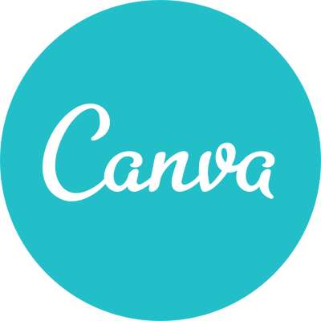
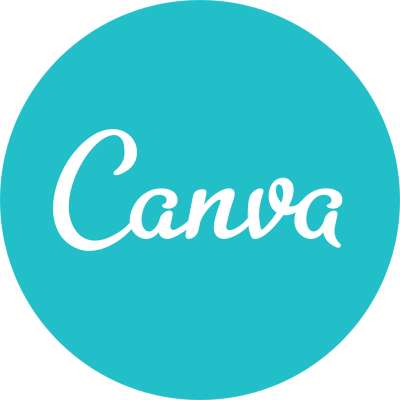
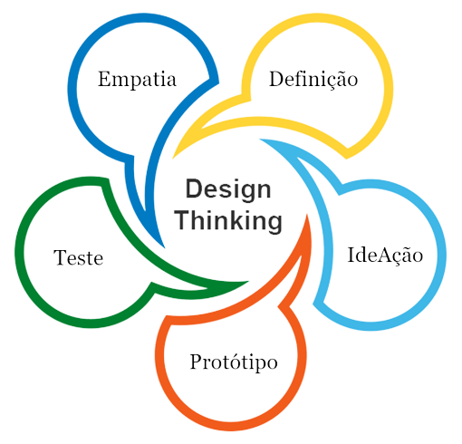
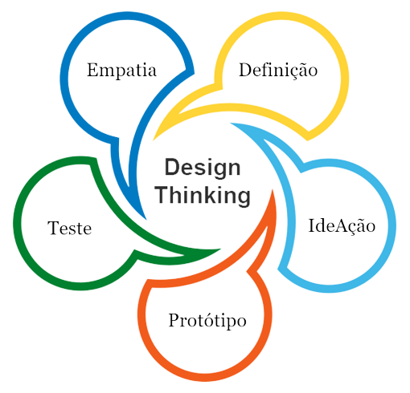
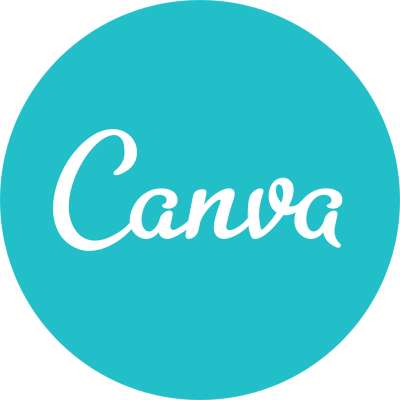
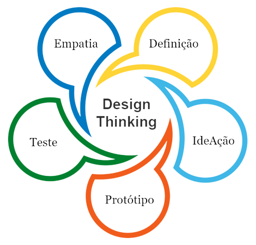

Essas são as tecnologias que uso:
Design
 

 

Comecei a me encantar pelo Design desde cedo, a partir da convivência com meu pai e minha prima, que estudaram nesta área, e também através do meu interesse em decoração e moda . Com minha graduação em Tecnologia de Gestão Ambiental percebi que as soluções para sustentabilidade devem ser desenvolvidas por designers.Assim quando finalizei, decidi me aprofundar ao ingressar em uma pós-graduação de UX e UI Design.
Minha trajetória se resume à :
- Auxiliar de Produção pela Coca-Cola FEMSA;
- Auxiliar de Cadastro para o Repassa, empresa do Grupo Renner;
- Apoio de Loja para SHOULDER;
Recentemente estou estudando a ferramenta Figma, e me encontro à procura de estágio na área de UX e UI Design.
Ler livros.
Estudar sobre moda e tendências.
Assistir documentários sobre vida selvagem e animes.
Desenvolvimento profissional, Design Thinking, Desing de Interação, Gamificação e Figma.
Boa Comunicação, Escrita e Capacidade de Negociação, Trabalho em equipe, Organização e Gerenciamento de tarefas, Resolução de Problemas com Criatividade e Inovação, Facilidade em Aprender, Proatividade, Pensamento Crítico, Resiliência, Busca constante por conhecimento, Ética profissional e Inteligência Emocional, além da Autoconfiança
Sempre fui uma pessoa muito conectada com a natureza e com o criativo. As cores, as formas, a harmonia e aquele universo fantástico das artes. Eu diria que percebi minha inclinação quando admirava minha mãe montando cenários de papelão para minhas festas de aniversário e quando meu pai e minha prima começaram a cursar Design. No entanto, achava que em mim não havia talento, como nos meus familiares que desenhavam tão bem.
Para não apagar completamente este meu lado que aflorava do meu ser, resolvi colocá-lo no meu vestir, adicionando cores e assimetrias que tanto gostava ao meu guarda-roupa. Na profissão, optei por seguir a outra conexão, a natureza, escolhendo ser Médica Veterinária. Porém, com o vestibular batendo às portas, optei por Gestão Ambiental, sonhando em tornar o mundo mais sustentável e colocar fim às mudanças climáticas.
Quando a realidade da profissão me foi posta à mesa, senti que ela se tornava cada vez mais intragável para mim. Foi então que me senti completa com meu ativismo como Consumidora Consciente e a favor de práticas Zero Waste. Pensei que não havia cargo, profissão ou maneira de emprego que eu gostasse.
Após algumas conversas com meu esposo e amigos, identificamos que a área ideal para o meu perfil é UX e UI Design. Tenho muita facilidade com combinações de cores e sempre me peguei editando fotos no Pixlr. Hoje SEI que meu tato e meu olhar foram aperfeiçoados pelo meu vício em Moda, Pinterest e no que é belo de maneira geral.
Por isso, hoje, sou Gestora Ambiental e faço Pós-Graduação em UX e UI Design, juntamente com um curso focado em Figma. Quero aprender cada vez mais nesta área, me descobrir e me aperfeiçoar como Designer, e colocar em prática todo este meu amor pela criatividade. O meu sonho é realizar projetos incríveis que inovem o mercado.


Tela criada para celular Android
Animação criada pelo Figma
Criado no Figma
Acesse esse link para ver completo.Protótipo feito no Figma.
Fico feliz que tenha chegado até aqui.
Entre em contato comigo atraves das minhas redes sociais